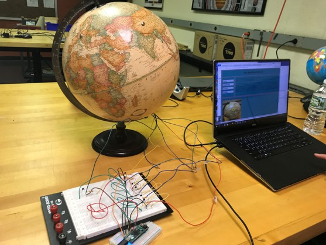

It's a Small World After All
Don’t know where you want to study abroad? Wish you could see it all? Us too! We bring you the “It’s A Small World After All,” an interactive world globe that allows you to touch a continent and view photos of Amherst Students studying abroad in countries on that continent. To create this “Small World”, each continent on the globe is connected to a touch sensor. Each touch sensor is actually a capacitor, which is a device that stores charge. When you touch the sensor, the capacitor stores more charge. By monitoring the charge on the capacitor, our program can tell when the sensor is being touched, and as a result, the computer will show pictures. We hope this project helps students find the perfect location to study abroad!

